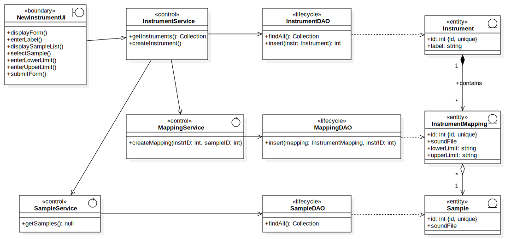

Instrument
UMLPackage
JAMS — Just Another Music Studio
::
Analysis Model
::
Instrument
Description
none
Diagrams

Create an instrument
Properties
Name
Value
name
Instrument
stereotype
null
visibility
public
importedElements
Owned Elements
«boundary»SessionInstrumentUI
«boundary»NewInstrumentUI
«control»InstrumentService
«control»MappingService
«control»SampleService
«lifecycle»InstrumentDAO
«entity»Instrument
Create an instrument
«lifecycle»MappingDAO
«entity»InstrumentMapping
Add an instrument to a session
Create an instrument
«lifecycle»SampleDAO
«entity»Sample